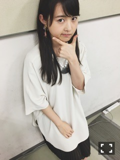
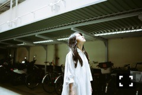
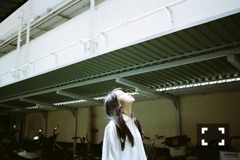
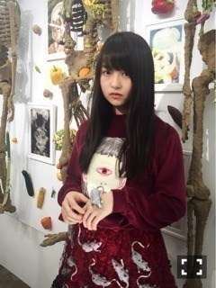

| 2016/05 31 Tue | いい加減に寿司。716回目 |

や！
幕張メッセで握手会でした。
来てくださったみなさん
ありがとうございました〜！！
この時期体調に気をつけなければね。
宇宙支店にセレクトしてあった
KLOKAの無重力ピアスを
イヤリングにしていただきました！
はああ、、、すてき。
豆缶から豆が飛び出てて最高だ！
まず、無重力というテーマが素晴らしい！
宇宙支店にセレクトしてたものは
全部おもしろかったなー

ちなみにこのハリセンネックレスは
I am Iで購入しました∠( 'ω')／
完全にハリセンだと思って購入したけど、
みんな貝だ富士山だ扇子だなんだ
それぞれ言ってましたね。
今回の私服に対し統一感なさ過ぎたけど
まあ、いいや。
あーアクセサリーって楽しいなあ、うふふー
Aquviiのアクセサリーも大好き。
chelsea chiyoco可愛い
はあ、歩き回りたいー
色、植物、生き物、建物、なにかもモチーフ
いろんなものに目が行く人間。
歩けば歩くほど素敵なものが
そこらじゅうに転がっています。
乃木のので言ってた釣った魚をどうするか、
万理華はウロコを剥いで、
アクセサリーにするという
オチをつけられたけど、
そのせいで、そのせいじゃないかもですが、
魚にも興味津々だよヽ(ﾟ､｡)ﾉヽ(ﾟ､｡)ﾉ
魚ってかわいいよねヽ(ﾟ､｡)ﾉ
爬虫類ももちろんだけど、
魚類もいいよねヽ(ﾟ､｡)ﾉ
だから寿司にはまってるってわけでも
ないんだけどねヽ(ﾟ､｡)ﾉ
あ、また趣味の話になってしまった、


そういえば、この前夢を見たのですが、
ある光景があまりにも綺麗で
忘れられないので絵におこした！
こういう時ありません？
あと他に徹夜でお絵描きしてたら
寝坊したよ。気をつけようヽ(ﾟ､｡)ﾉ
はあ、ひさびさにお絵描き楽しいわあ

ゲゲ
今は46時間TVに向けて
いろいろ計画してます！！せっせ！
まりか
コメント(428)
2016/05/31 18:24